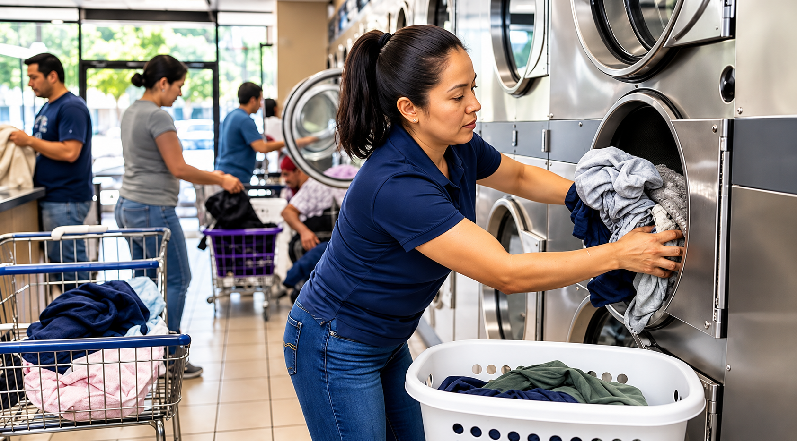
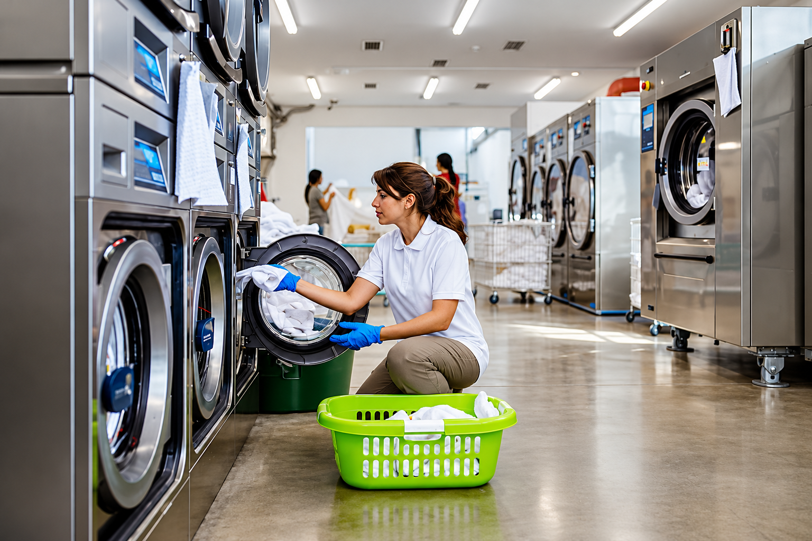
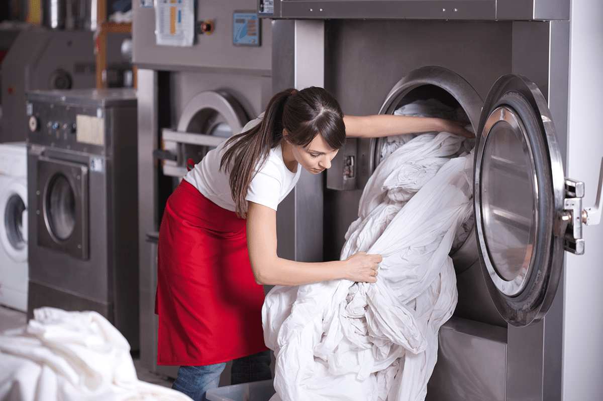
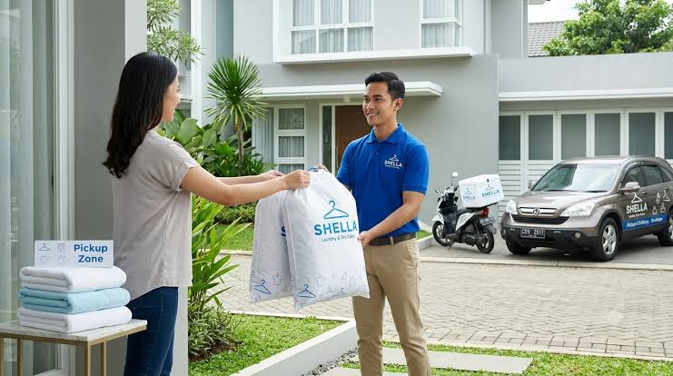
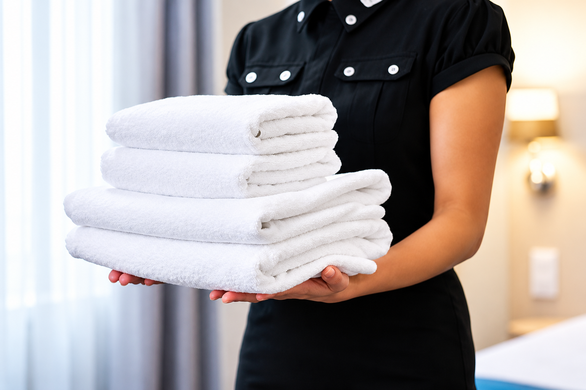

01
Hotel Laundry
Professional care for bed sheets, pillowcases, towels and other hospitality linen.
Explore ServiceDependable commercial laundry solutions for hotels, hospitals and hospitality businesses. We keep your linen clean, fresh and ready for what comes next.



VantaLinen provides dependable commercial laundry and linen care services tailored to the daily needs of hotels, hospitals and hospitality businesses.
Our focus is on consistent linen quality, careful handling and reliable service coordination. From collection to delivery, we help your business maintain fresh, clean linen and smooth daily operations.
Discover Our ServiceReliable linen care services designed to support the daily operations of hotels, hospitals and hospitality businesses.
Professional care for bed sheets, pillowcases, towels and other hospitality linen.
Explore ServiceOrganised linen handling for healthcare facilities, supporting their everyday requirements.
Explore ServiceDependable cleaning and care for frequently used towels, bedding and essential linen items.
Explore Service
Convenient collection and delivery coordination to help keep your linen supply organised.
Explore Service
We support a wide range of businesses with reliable commercial laundry solutions, designed around their operational needs and hygiene standards.
Consistent care for guest bedding, bath towels and hospitality linen.
Reliable processing for patient bedding, hospital linen and healthcare textiles.
Fresh linen and dependable laundry support for comfortable guest stays.
Dependable care for table linen, napkins and food-service textiles.
We help hospitality and healthcare businesses maintain clean, dependable linen standards with commercial laundry support they can count on.
From everyday towels to essential bedding, we focus on careful handling and a consistent finish.
Dependable laundry coordination helps your team manage with confidence.
Commercial laundry solutions designed around your industry, linen volumes and operating requirements.
Clean linen. Consistent standards. Confidence in every delivery.
Let's Work TogetherFrom initial collection to final delivery, every stage is organised to support your commercial laundry requirements with care and consistency.
Discuss Your RequirementsWe organise your linen collection and sort items according to their type and care needs.
Linen is processed using suitable washing methods selected for the items being handled.
Processed linen is fully finished, checked and organised before it is prepared for dispatch.
Your linen is prepared for return according to your very agreed collection and delivery plan.
We work with hotels, healthcare facilities and commercial clients to provide reliable linen care and consistent service.
VantaLinen has been a partner for our hotel. Their service helps us maintain the linen standards our guests expect.
Hospitality Client
An organised linen service helps our team coordinate daily requirements and maintain clean linen throughout our facility.
Healthcare Client

The service is structured around our business requirements, making linen collection and return easier to coordinate.
Commercial Client
Looking for dependable commercial linen care?
Talk to Our TeamFind answers to common questions about our commercial laundry services, collection schedules and linen care.

Our team can help you find the right laundry solution for your business and daily linen requirements.
Contact Our TeamWe provide commercial laundry solutions for hotels, hospitals, healthcare facilities and other businesses that require professionally cleaned linen.
Yes. Contact our team to discuss your collection requirements and arrange a schedule that suits your business operations.
Linen is handled according to its type and cleaning requirements. Contact us for details about the processes available for your facility.
Pricing can depend on your linen volume, service frequency and specific business requirements. Get in touch with our team for a tailored quotation.
We can discuss your facility's laundry volume, operational needs and expected service frequency to determine a suitable solution.
Tell us about your business and laundry requirements. Let's find a reliable solution that works for your team.